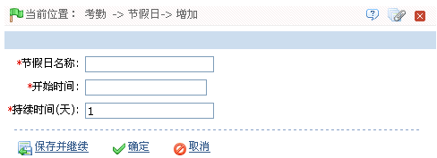

7.3 考勤节假日
节假日的考勤时间可能与平时的考勤时间不同，为了简便操作，系统提供了节假日设置，专门针对节假日设置考勤时间与考勤规则。设置后，在考勤日报中该日期就自动成了节假日的工作类型，如果有人在此日期中上班则会被计算成节假日加班。
1、单击【考勤】 【节假日】
【节假日】 【新增】，进入新增节假日页面：
【新增】，进入新增节假日页面：

根据需要设置各参数，具体设置方法如下：
节假日名称：输入节假日名称。
开始时间：设置该节假日的开始日期，日期的设置方法，请参见附录1 常用操作中的2. 选择日期。
持续时间（天）：设置改节假日的持续时间。（时间单位为天）
2、设置完成后，单击【确定】按钮，保存并返回节假日页面，此时节假日列表中将显示刚新增的考勤节假日。
 备注：增加了节假日后，在人员排班中，系统不会对节假日的时间进行排班。由于没有排班记录，在考勤报表中，系统是不会计算节假日期间的考勤。
备注：增加了节假日后，在人员排班中，系统不会对节假日的时间进行排班。由于没有排班记录，在考勤报表中，系统是不会计算节假日期间的考勤。
-
 编辑考勤节假日
编辑考勤节假日
1、在节假日列表中，单击节假日名称，或者单击“相关操作”下的【编辑】按钮，进入编辑页面。
2、根据需要修改各参数，单击【确定】按钮保存修改。
-
删除考勤节假日
1、在节假日列表中，选中选删除的节假日，然后单击节假日列表左上方的【删除】按钮，或直接单击该节假日所在行的“相关操作”下对应的【删除】按钮，进入删除确认页面。
2、单击【确定】按钮，删除并返回节假日页面。